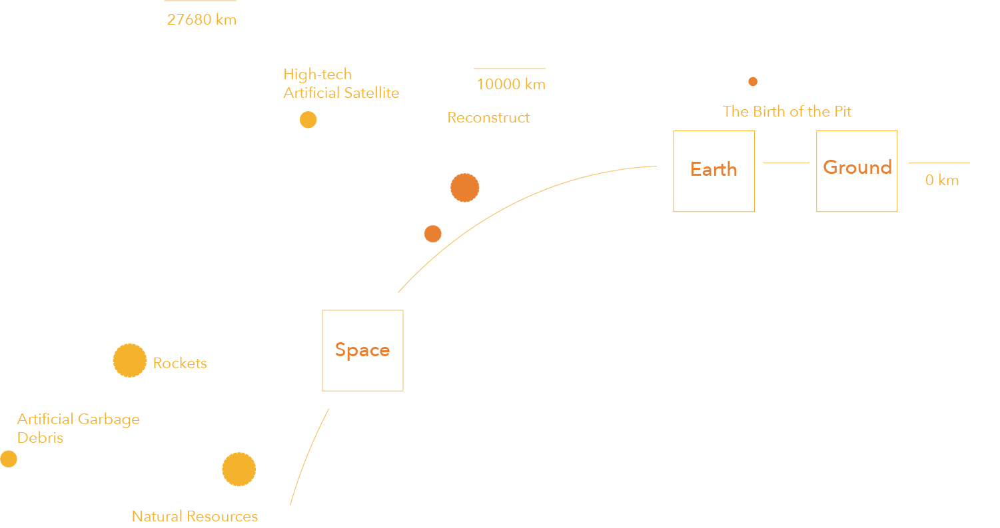
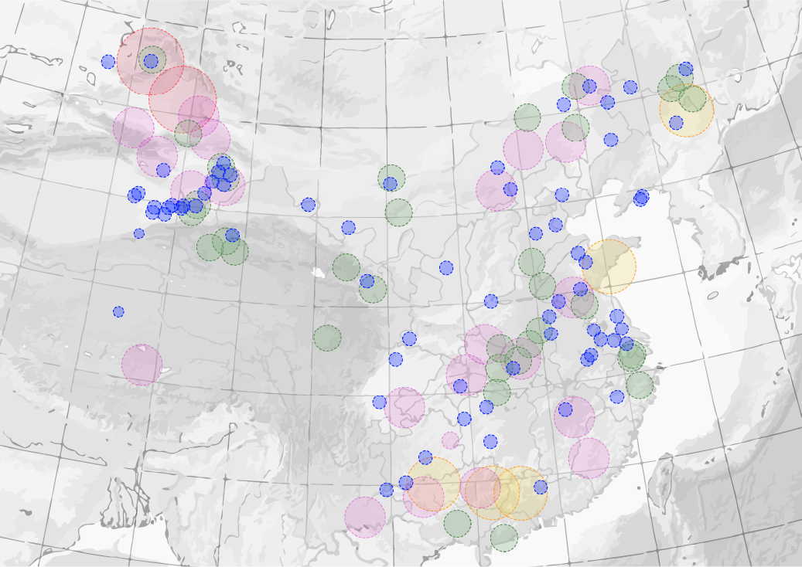
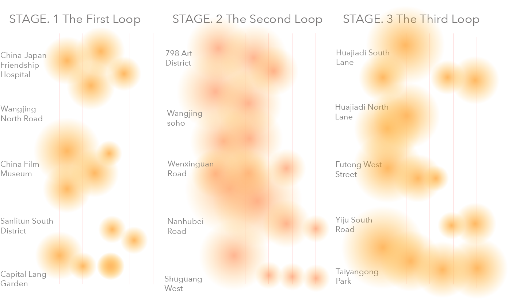
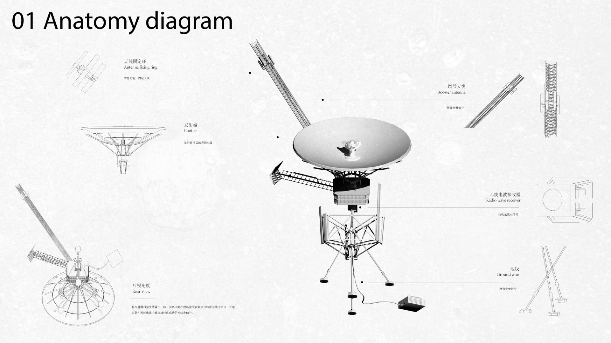
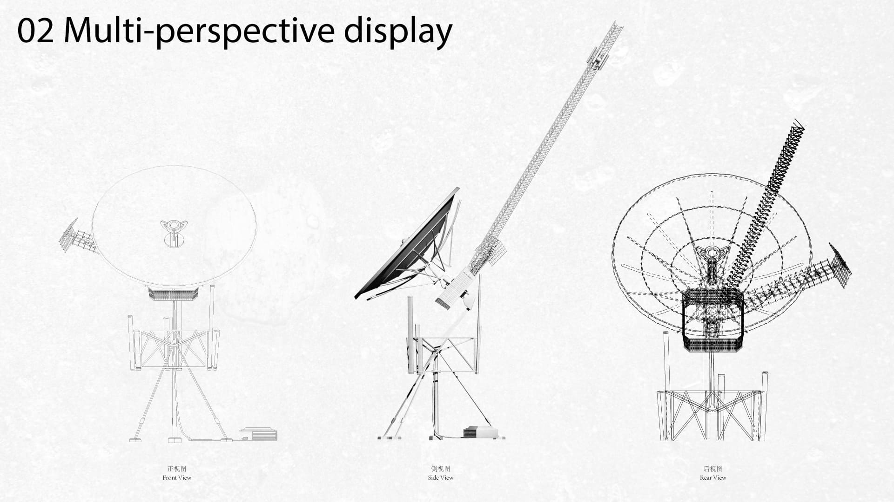
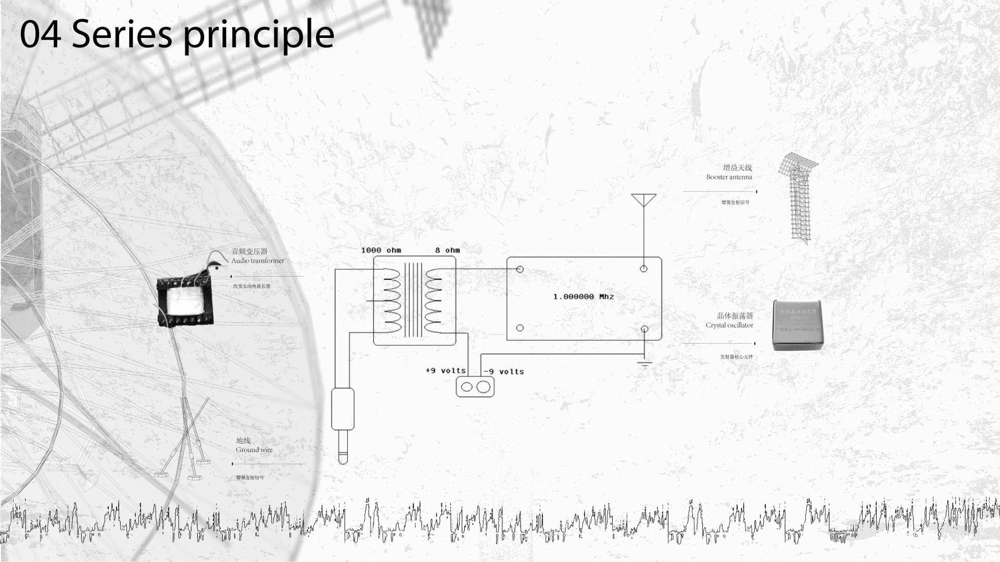
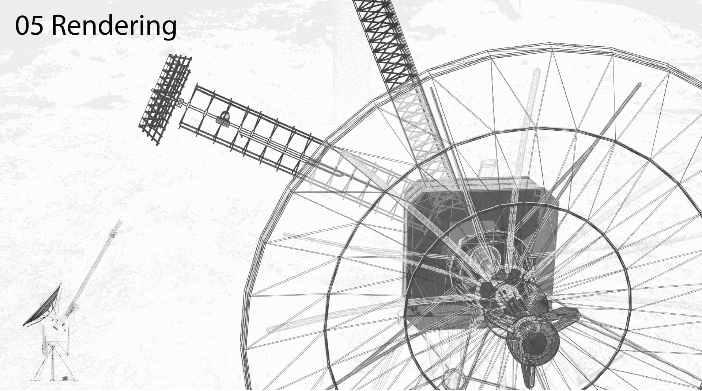
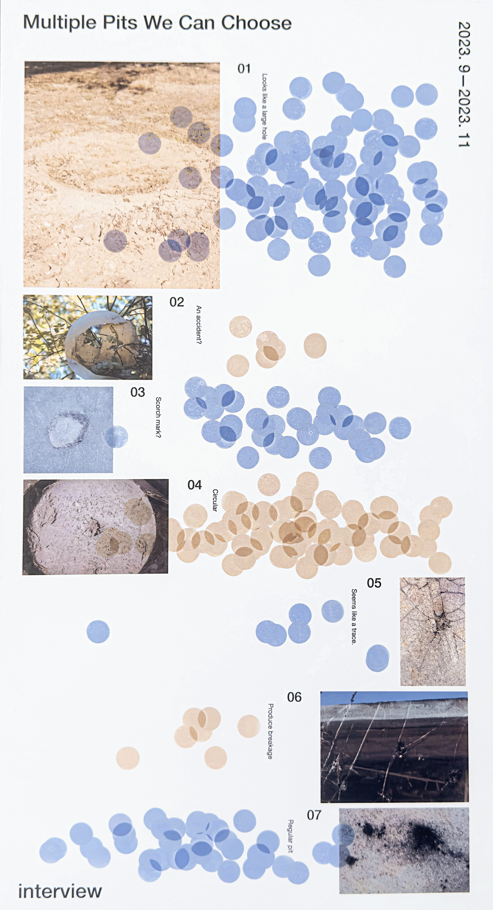
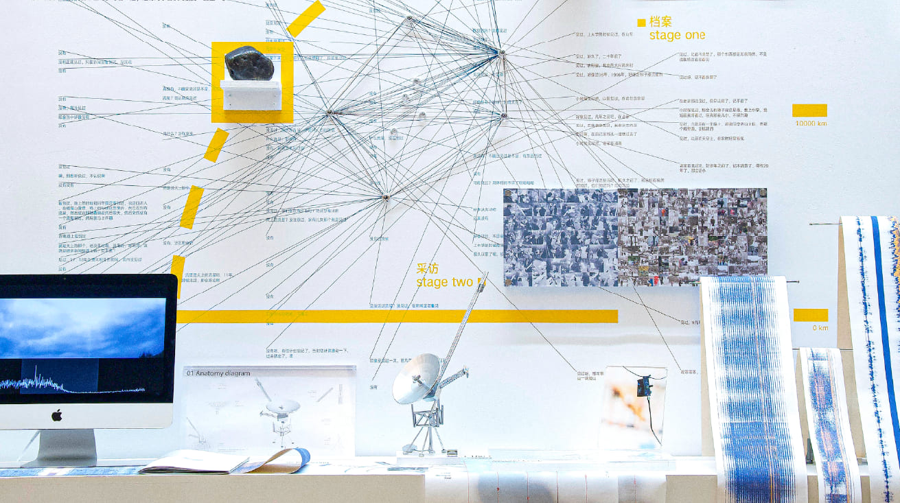
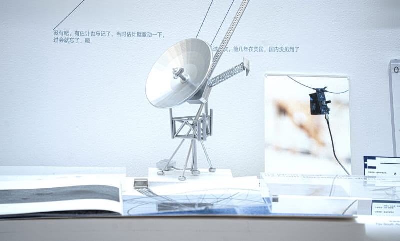

The Gift of the Land
As the Project Lead, I spearheaded this mixed-media initiative from concept to physical exhibit. I designed and built the core circuitry using crystal oscillators and RF components, and created tangible models via 3D printing and fabrication. I also directed the photography to capture the project's narrative, delivering a final installation that bridges technology, art, and craftsmanship.
Introduction
Planets colliding in space trigger oscillations, leaving the Earth with distinct cosmic imprints.
This represents the evidence of space's presence on Earth and a tangible touchpoint for human engagement with space. We endeavor to convert the intangible love beyond the dome into tangible love on Earth. Targeting meteorite craters for exploration, activation, and response.

We invite the public to collaboratively create, interweave real-life vignettes, recreate circular routes, and design transceivers that convert actual sounds into wireless signals. These signals are transmitted in real-time at chosen locations, completing the oscillation cycle.
Map of Meteorite Craters in China
Meteorites are unique "extraterrestrial visitors" that fall regularly. As Earth moves through space, it encounters debris daily. Most meteoroids burn up, but some survive and reach the surface as meteorites.

Archival organization
Finding Star Interview

Anatomy Diagram




Multiple Pits We Can Choose

Final Outcome
In the presentation of the exhibition, I have chosen to juxtapose real meteorites with artificial ones, while also presenting a self-curated meteorite archive. Additionally, responses from participants are displayed on-site, and signals received from deep space are quietly transmitted.
On Earth, within the exhibition, we aspire to engage in a ritualistic "look back" at the universe with the participants.


Video